傅里叶变换学习笔记
离散傅里叶变换
创建时间 2023 年 10 月 18 日
纸上得来终觉浅，觉知此事要躬行，想搞懂离散傅里叶变换，最好是自己做一遍，回想起来，从来没有真正手算过傅里叶变换
本文只求理解，会用，不追求严谨的推导
首先是离散傅里叶变换的公式，傅里叶变换后得到的 X[k] 为
X[k]=n=0∑N−1x[n]e−j2πk(n/N),(0≤k≤N−1)
然后是离散傅里叶反变换的公式，原信号 x(t) 的采样信号 x[n] 可以表示为
x[n]=N1k=0∑N−1X[k]ej2πn(k/N),(0≤n≤N−1)
对于 e−2πNkn ,如果不好理解，就根据欧拉公式 eiθ=cos(θ)+isin(θ) 先拆分一下，（最好是能够理解）
X[k]=n=0∑N−1x[n]cos(−2πkNn)+jn=0∑N−1x[n]sin(−2πkNn),(0≤k≤N−1)
也就是
X[k]=n=0∑N−1x[n]cos(2πkNn)−jn=0∑N−1x[n]sin(2πkNn),(0≤k≤N−1)
先看 cos 项，对于 Xcos[k] ，可以这样理解，在原信号的每个采样点 x[n] 所在的位置，按照某个特定频率的余弦信号也生成一个点（离散化），逐点相乘，再求和，这样可以寻找原始信号 x[n] ，与这个余弦信号 cos(2πNkn) 之间的相关性
因为这个操作有个很奇妙的地方，如果这两个信号不相关，Xcos[k]算出来就是 0
举个例子，假设原信号x(t)=cos(4πx),在两个周期内采样 20 个点
x[n]=cos(4π×Nn)
X[1]计算结果如下,Xcos[1]=0

X[2]计算结果如下,Xcos[2]=10
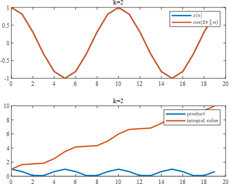
X[3]计算结果如下,Xcos[3]=0
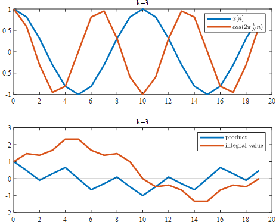
一直到Xcos[19],Xcos[19]=0
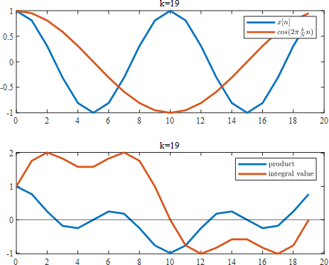
非常奇怪，k=19 与 k=1 的效果是一模一样的,这是因为根据cos的对称性cos(θ)=cos(2π−θ) cos(2π×kNn)=cos(2π×(N−k)Nn)
也可以这么理解，低频信号与高频信号是有交点的，cos(2π×1t)与cos(2π×19t)有很多交点，但是离散化之后，又恰巧把离散点取到了这些交点上，无法分辨这些点到底是哪条线上的，这也从另一个角度说明了为啥傅里叶变换是对称的，而且只有前面一半的是有用的，因为 k 取 19 时，无法判断到底时 1 触发的还是 19 触发的，干脆舍弃不用
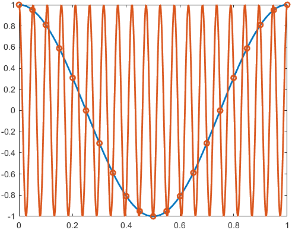
只有当x[n]中有此频率成分时，Xcos[k]才不为 0，剩下的，积分算出来全是 0
那么，计算出来的Xcos[k]的物理含义到底是什么呢？
-
“k”表示第k个频率分量，这里，信号频率为 2Hz，采样频率fs为 20Hz，那么Xcos[k]就对应了f=Nkfs的频率，当k=2时，f=2Hz
假设采样点数N=40，那么对于x[n]=cos(4π×Nn)进行变换，则Xcos[2]=20,对应频率f=402×40
k 对应的频率搞清楚了，那Xcos[k]的值表示什么呢？此频率分量真正的幅值为“N2X[k]”,对于直流分量“N1Xcos[0]”
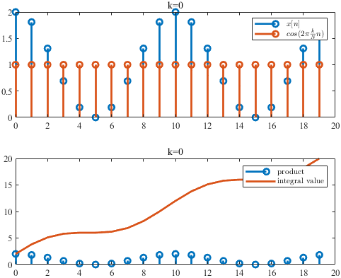
至于“1/N,2/N”是怎么来的，看了有的教程，说太简单就不推导了，资质愚钝，不能理解
那么傅里叶变换中的sin(θ)项又是啥意思呢
假设原始的函数有了相位偏移，x(t)=cos(4πx+π/4),在两个周期内采样 20 个点
x[n]=cos(4π×Nn+4π)
不相关的项X[0],X[1],X[3]⋅⋅⋅依然是 0，对于Xcos[2],Xcos[18]则有了变化

这个图像与原函数为x(t)=0.707cos(4πx)的效果是一样的，这种情况显然是不好的，无法分辨是本来原函数的幅值只有 0.707，还是因为相位的偏差导致算出来幅值为 0.707
甚至当相位偏了π/2时

相位偏了π时
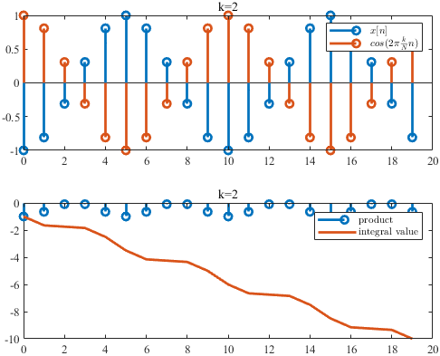
也可以说上述只有 cos 的变换是不完善的，损失了某些信息，这就引入了 sin 项,用 cos 和 i*sin 的组合，来不失真地进行转换
Xsin[2]=−7.07

Xsin[18]=7.07

注意，这里 Xsin[k]=−Xsin[N−k] ,也是因为根据 sin 的对称性 sin(θ)=sin(2π−θ) sin(2π×kNn)=−sin(2π×(N−k)Nn)
这时，cos 项和 sin 项组合起来就能完整地表征原始信号了
幅值
X[k]=(Xcos[k])2+(Xsin[k])2
X[2]=(Xcos[2])2+(Xsin[2])2=10
相位
actan0.707−(−0.707)=π/4
傅里叶变换画图
当傅里叶拿起画笔
首先画一个简单的爱心
其横纵坐标分别为
axis_x = [2 3 4 5 4 3 2 1]';
axis_y = [4 3 4 3 2 1 2 3]';
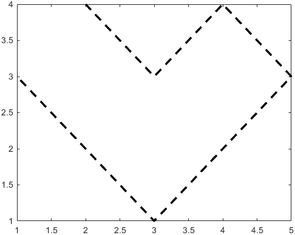
把坐标转换为复数形式
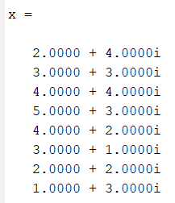
进行离散傅里叶变换
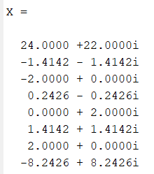
这些复数也可以认为是一些点，不过似乎和原来的点没啥联系
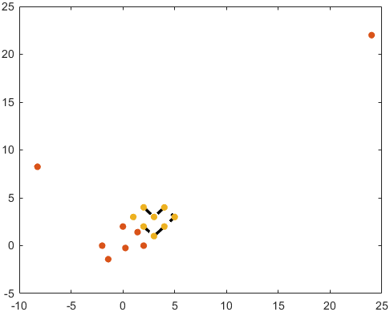
但是根据傅里叶变换的公式，稍加分析就会发现x[n]和X[k]之间的联系
x0=81(X0⋅e0+X1⋅e0+X2⋅e0+X3⋅e0+X4⋅e0+X5⋅e0+X6⋅e0+X7⋅e0)
x1=81(X0⋅e0+X1⋅ei2π/8+X2⋅ei4π/8+X3⋅ei6π/8+X4⋅ei8π/8+X5⋅ei10π/8+X6⋅ei12π/8+X7⋅ei14π/8)
xn=N1(X0⋅ei2πnN0+X1⋅ei2πnN1+X2⋅ei2πnN2+X3⋅ei2πnN3+X4⋅ei2πnN4+X5⋅ei2πnN5+X6⋅ei2πnN6+X7⋅ei2πnN7)
而eiθ相当于绕着圆周旋转
x0等于X[0],X[1]⋅⋅⋅X[7]分别旋转0/8个0⋅2π，1/8个0⋅2π，···7/8个0⋅2π，求和取平均
x2等于X[0],X[1]⋅⋅⋅X[7]分别旋转0/8个2⋅2π，1/8个2⋅2π，···7/8个2⋅2π，求和取平均
x3等于X[0],X[1]⋅⋅⋅X[7]分别旋转0/8个3⋅2π，1/8个3⋅2π，···7/8个3⋅2π，求和取平均
那么傅里叶变换之后的这些矢量平均和的端点，就能够还原原来的图像上的点，这就是为啥傅里叶变化画图是一堆箭头，外面套个圆圈，再绕来绕去
第0个点
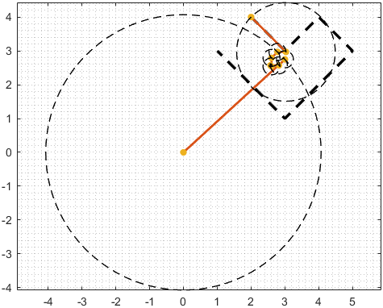
第1个点
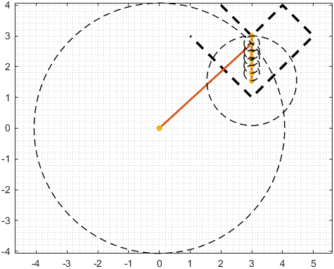
第2个点

第7个点
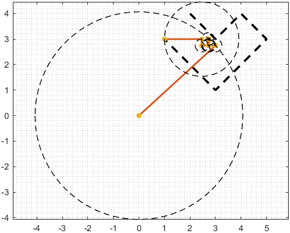
这些矢量我没有按照模值大小排列，按大小排个顺序，就跟网上看到的一样了，把这每一帧连起来播放，就是最终的动画